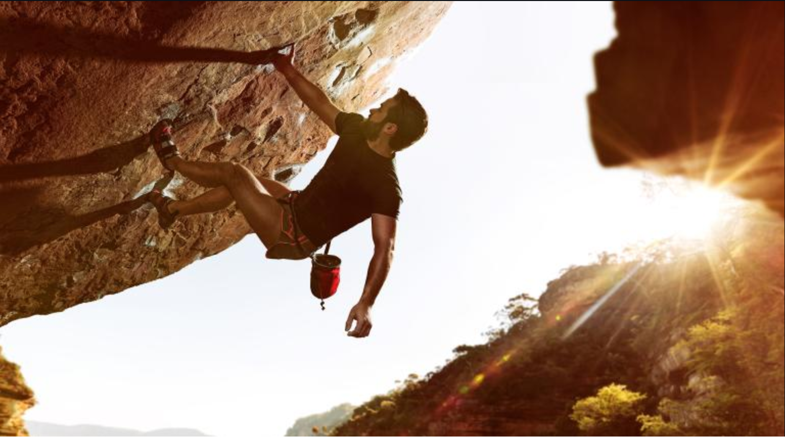

Recreational bouldering is a dynamic and exhilarating form of indoor rock climbing that focuses on short, challenging routes known as "problems." Climbers, equipped with climbing shoes and optionally chalk for grip, ascend these problems, typically ranging from 10 to 20 feet in height, without the use of ropes or harnesses. Instead, individual crash pads or a floor-wide mat is located beneath to provide safety in case of a fall.
Recreational bouldering has its roots in the early 20th century when it was primarily considered a training method for traditional rock climbing. Bouldering allowed climbers to practice and refine their skills on shorter, more accessible rock formations before attempting more significant ascents. The sport gained momentum in the 1980s with the development of purpose-built indoor bouldering walls, offering climbers a controlled environment for training and recreational climbing. Over time, bouldering evolved into a distinct discipline, emphasizing technique, strength, and problem-solving. It attracted a growing community of enthusiasts, leading to the establishment of bouldering-specific competitions and gyms worldwide. Today, recreational bouldering has become a dynamic and inclusive activity, accessible to climbers of all ages and abilities.
1 / 3

Person bouldering on a climbing wall with a group observing the climbers performance of a route
2 / 3

Man bouldering outdoors
3 / 3

Seattle Bouldering Project interior